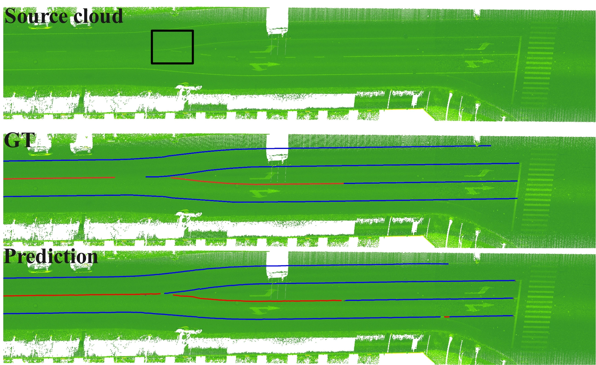
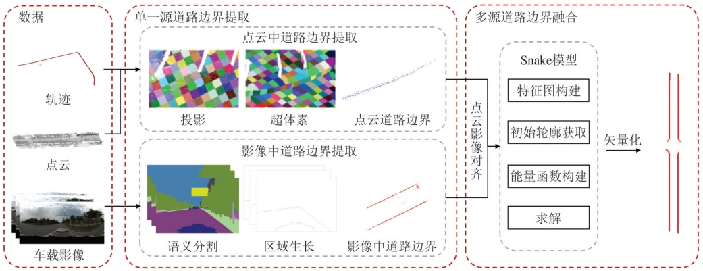
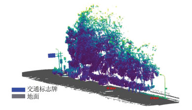
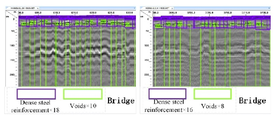
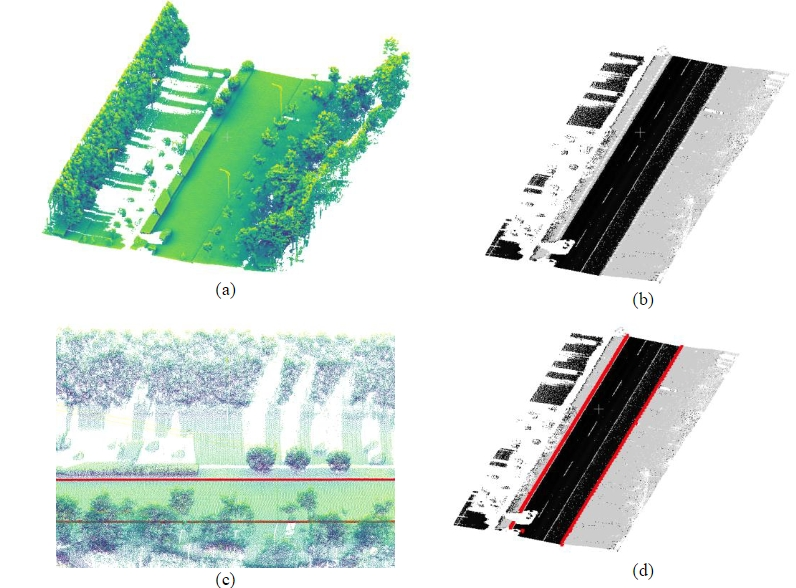

View by [Year], [Topic] or [Journal].
* denotes equal contributions and † denotes the corresponding author.
2024

A benchmark approach and dataset for large-scale lane mapping from MLS point clouds
Xiaoxin Mi, Zhen Dong, Zhipeng Cao, Bisheng Yang, Zhen Cao, Chao Zheng, Jantien Stoter, Liangliang Nan
International Journal of Applied Earth Observation and Geoinformation(JAG) 2024 (IF: 7.9)
[Paper]

Fusion of Vehicle-Mounted Imagery and Point Cloud for Road Boundary Extraction and Vectorization.
Pangyin Li, Xiaoxin Mi†, Penghui Ding, Weichen Sun, Huazu Zhang, Chong Liu, Zhen Dong, Bisheng Yang
Geomatics and Information Science of Wuhan University (2024)
[Paper]
2021
A two-stage approach for road marking extraction and modeling using MLS point clouds
Xiaoxin Mi, Bisheng Yang†, Zhen Dong†, Chong Liu, Zeliang
Zong, Zhenchao Yuan
ISPRS J 2021 (IF: 11.774)
[Paper]
Automated 3D road boundary extraction and vectorization using MLS point clouds
Xiaoxin Mi, Bisheng Yang, Zhen Dong†, Chi Chen, Jianxiang Gu
IEEE T-ITS 2021 (IF: 9.551)
[Paper]
2020

车载激光点云道路场景可视域快速计算与应用.
米晓新， 杨必胜， 董震
武汉大学学报· 信息科学版 2020
[Paper]
2019

A deep learning approach for urban underground objects detection from vehicle-borne ground penetrating radar data in real-time.
Zeliang Zong, Chi Chen, Xiaoxin Mi, W Sun, Y Song, J Li, Z Dong, R Huang, B Yang
The International Archives of the Photogrammetry, Remote Sensing and Spatial Information Sciences 2019
[Paper]

Automatic road structure detection and vectorization Using Mls point clouds.
Xiaoxin Mi, Bisheng Yang, Chi Chen, Ming Yang, Zhen Dong
The International Archives of the Photogrammetry, Remote Sensing and Spatial Information Sciences (2019)
[Paper]